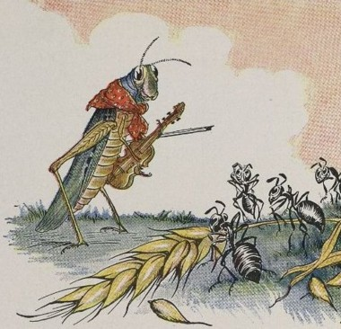

La Cigale et la Fourmi
הַצְּרָצַר וְהַנְּמָלָה
La cigale, ayant chanté
Tout l’été,
Se trouva fort dépourvue
Quand la bise fut venue :
Pas un seul petit morceau
De mouche ou de vermisseau.
Elle alla crier famine
Chez la fourmi, sa voisine,
La priant de lui prêter
Quelque grain pour subsister
Jusqu’à la saison nouvelle.
Je vous paierai, lui dit-elle,
Avant l’oût, foi d’animal,
Intérêt et principal.
La fourmi n’est pas prêteuse :
C’est là son moindre défaut.
Que faisiez-vous au temps chaud ?
Dit-elle à cette emprunteuse. —
Nuit et jour à tout venant
Je chantais, ne vous déplaise. —
Vous chantiez, j’en suis fort aise !
Eh bien ! dansez maintenant.
« l’oût » : vieux mot français qui signifie la moisson.
La fable en vidéo